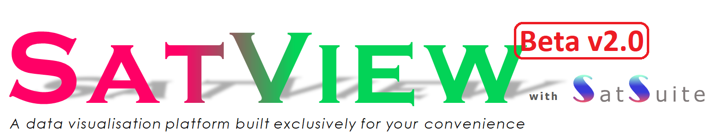

This is only for demonstration and is not the operational version; data not available due to confidentiality

For feedback and bug reporting, please contact THAM_Yap_Fung@nea.gov.sg
☰
User Guide
Versions
1 x 2 MultiView
3 x 1 MultiView
2 x 1 MultiView
2 x 2 MultiView
1 x 4 MultiView
Exit MultiView
H-8
Asia Pacific
IR1
colour-enhanced
IR2
monochrome
DayVisNIghtIR
Mekong Sub-region
DayVisNightIR
SmokeHaze
NaturalColor
BioBurning
Southeast Asia
IR1
colour-enhanced
IR2
monochrome
IR3
water vapour
IR4
thermal
VIS
visible
DayVisNIghtIR
SmokeHaze
NaturalColor
DayNightConv
DayNightuPhy
DayNightConv
BioBurning
VolcanicAsh
Singapore
VIS
DayVisNightIR
SmokeHaze
DayNightConv
DayNightuPhy
FY-4A
PseudoTrueColour
SmokeHaze
NaturalColour
FireTemperature
GK-2A
DayVisNightIR
SmokeHaze
BioBurning
NaturalColor
Hotspots & Haze
FUSIUN Hotspots
hotspot composite
FY4A Hotspots
N20 Hotspots
[high bandwidth required]
SNPP Hotspots
[high bandwidth required]
Aqua Hotspots
[high bandwidth required]
Terra Hotspots
[high bandwidth required]
SmokeMask
{threshold-based algorithm}
SmokeMask
{random forest algorithm}
SatSuite for Thunderstorms
SatTS
- automated thunderstorm identification
SatRGB
- cloud properties RGB composite
SatSC
- automated significant convection classification
SatSCN
- significant convection nowcast
[pending real-time data feed]
SatView
- data visualisation platform
RADAR
Rainfall Rate
[240km]
Rainfall Rate
[70km]
Reflectivity
[70km]
Precipitation Accumulation
[70km]
Velocity
[50km]
More
Lightning Strikes (LDS)
METAR/SPECI
TAF